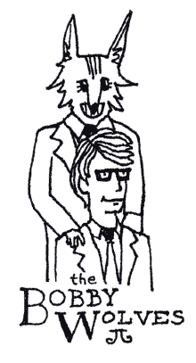

He kills. He lies. He butchers the world.
Then, my dad knocked down a few bruskies with him. Built him a house in the neighborhood.
They all moved in. In the middle of the night. Slowly looking along the rows of silent houses. They sniffed the fresh human all around.
My day came with them.
I was hiding in the bushes behind their house. I had come through a hole that one of them had dug in the retaining wall. I came out dirty, which was unacceptable, but I made it up to myself by finding a thick patch of blackberry bushes to climb high inside of. I had on a dress with a dense pattern of bluebells that made for an appropriate camoflauge.
What superb hiding skills I had developed. I rotated my body sideways, so as to levitate in a stark shadow that came off the edge of the roof. In case of clairvoyant passers-by, I melded my thoughts with those of the bush. I rippled my skin in accordance with a light wind. I breathed out of my toes.
Into view came Darla Wolf, walking out the back screen door, tossing my sweater out into the yard. Sure enough, there it was and there it flew through the air. The dull orange so soft and attractive. Three wonderfully proportioned red squares lined up attentively on the chest, awaiting my orders. The folded cuffs. Just as I had last worn it. The world's first aerial sweater exhibition was off to a smashing start.
An incredible sweater. I am a proud owner. In times passed, whenever I wore it, I also felt like I was wearing an invisible sombrero with trophies piled in the brim.
In a most rambunctious fashion, which she would never expose to the other children of our eighth-grade class, Chelsea Wolf scrambled outside on all fours. I wondered: how do they decide when to scamper and when to go upright? Who am I kidding? There simply can be no reason behind Chelsea Wolf.
As far as I could tell, she had no valuable skills, apart from some amateur hiding I had seen her doing around the fence by the swimming pool. But that's just it: I had seen her. Her skills could not rival mine even on a casual level.
She dashed upon my handsome sweater, burying her head deep into it, sinking her teeth into the spaces in the knit. Oh, perfect spaces! Don't die! She carouseled around the yard with my sweater in her snout, prancing lightly with a wet, greedy smile.
Her kill drooped, one free and empty arm limply dragging, practically reaching for me. I swayed gently and my bush waved solemnly at my precious orange. At my sweet little, red squares.
"Look at you have fun, my little fangums!" said Darla cheerfully. She clapped her hands lightly against her shoulder, in wealthy manner. "Oh, my volfie volfums!"
The older brother Schultz, who sells luggage at the Sears, strolled out with a toothpick in his jaws. "Mom, where's all the garlic bread?"
Chelsea dragged my sweater farther away into the yard, nearer a swingset. She climbed up on a set of monkey bars and dangled.
"Now don't huff-and-puff. There's garlic bread all over," said Darla, pointedly. "Where did you look?"
"He walked out into the yard, examining the bright sky. "All over. You said there was fresh stuff in the oven. I checked there. Maybe in the cupboards? No, not so. And about the garlic bread container--"
"Don't huff-and-puff! Garlic bread never stays in the garlic bread container," Darla said. "I can't refill it fast enough."
"Ah, not to worry," he said, scanning the yard. "Here we have an exquisite day outside!"
Chelsea had gone down the slide attached to the swingset and, to make the experience doubly pleasurable, she gnawed on my sweater the whole time. She sat at the end of the slide and chewed apart the sweater. Yanking, stretching, grinding with her teeth.
Schultz tilted his head over my direction. "We're not growing any bluebells are we?"
I froze. He approached the bush very quickly and reached his hand inside. His hand searched around and he caught an edge of my dress. I carefully slid down a few inches deeper into the shadow, but he yanked the edge in his hand and came away with a few shoots of dress pattern.
"Indeed," he said, looking at the tear of fabric in his hand. "Bluebells. Who knew?"
"Garlic bread," I whispered.
"Ah, yes," he said, planting the bluebells in the dirt. "I am off to Tony's for some baguettes."
In times of despair, my only coping skill is a bit of impromptu poetry. A rhymed verse this time, as it's always a cute mask for irony:
God bless wee little fangum
Chewing on the gingham
At the bottom of the slide.
I probably cried.
She snagged my best sweater.
I'll find another that's better.
A terrible poem, indicative of the great turmoil whirling inside me, and by the time I made it home I knew I needed to rewrite that last line. How could I ever top the triple-red?
I ran to the phone and put my two friends, Amanda and Kricken, on party line.
"What is the average lifetime of a wolf?" I asked.
"Comparable to dogs I imagine. Ten years," said Amanda. "Unless it gets sick and dies."
"Wait a sec, Penta. Do you mean normal wolves or the Bobby Wolves?" asked Kricken. "Because the Bobby Wolves are not full wolves. They're normal humans that only had their heads animalographized."
I knew that. She had to know I knew that already. "Tell me more about sick wolves, Amanda. Is there a process to turn a Bobby Wolf into a sick wolf?"
"Yes," said Amanda. " I think there's a flavor of polio for wolves."
"Must I say it again? They are humans," said Kricken. "So I take it that Chelsea stole your sweater?"
"She nibbled it into unwearable fragments," I said. "I snuck over to their house and watched her rip it up."
"Well, you're asking for trouble," said Kricken. "You're getting too involved in their lives."
"He kills. He lies," I said. "He butchers the world."
"You can't be serious!" Kricken said.
Honestly, they'd been haunting me since I can remember. Back to when my mom took me to the bank with her and I saw that centrifugal portrait of Mr. Bobby Wolf dressed in a suit, his fur slicked back, a sharp grin that said, "Welcome to my bank! Greetings to all sweet, warm-blooded children of taste."
I saw the picture every pay period. I probably cried. In the photo, he stood erect, placing his bejeweled human hand on the shoulder of a young man who sat in a chair. His one human son, Carl, who was not only neatly groomed and beaming in his glasses, but who also refused to surgically modify his head. Unfortunately, Carl never lived to see his inheritance. He died in one of those accidents where you can't help but think, "Oh, if only he had the head of a wolf this wouldn't have happened!"
Chelsea was born late enough not to have a choice and the operation was performed in a New Jersey laboratory at the age of three months. An operation which had cost me my sweater.
"Try Parvo," said Amanda. "One of our dogs died of it."
"Maybe I need to take legal action. Mr. Hoffman next door says interesting little cases just like this get taken to the Supreme Court. Precidents get made," I said.
"Yeah, I think it's called Parvo. I might be getting it mixed up with this special Spanish peanut butter."
I reached over my desk and scribbled 'Parvo' in the margins of my calendar. Even if it wasn't a real disease, I'm always game to see what Amanda is trying to talk about. For example, Jesus gave the classic speech called Sermon on the Mount, which Amanda thought was hilarious. I asked her why. It took awhile, but eventually I figured out that she thought the Sermon on the Mount was this surfing merman who was stranded on a mountain, probably balancing on his surfboard at the peak.
Yeah, that is funny, Amanda. A merman trying to use a surfboard.
"This whole situation is screwed," I said.
"Tell us all about it," said Kricken.
"What is there to tell?" I said. "Chelsea gnashed my sweater. Her mom totally threw it to her. And Schultz couldn't find any garlic bread. It's the same old Bobby Wolves. It's like: Why do the teachers put up with this? They're all like: 'Oh, poor Chelsea Wolf is different and let's totally make the class an environment suitable for canine varieties.' So now we're treated like canines! Whoop-dee-doo! A wolf with gel in its hair! How special!
"But that's not right," said Kricken. "We're not treated like canines."
"Well we can't read Little Red Riding Hood because it talks about the a wolf that eats people."
"Oh, but that's not such a big deal," said Kricken. "Do you want Chelsea to get ideas like that? They're doing it for our sakes."
"But we need to read it," I said. "For our sakes, Krick. We need to know what these beasts are capable of! Some kids out there might see Chelsea in their beds, dressed as their grandmother, and--not that they'd fall for it--but they'd say, 'Oh, gee. It's just Chelsea. Just my friend from school.' Famous last words."
"Obviously, you're not in your right mind," said Kricken. "You're talking extreme consequences when really the only casualty is your sweater. Now, do you think that talking bad about the Bobby Wolves is going to get you anywhere?"
"Kill them," I said. "Kill them all."
"Parvo's a pretty good way to go," said Amanda. "My dog basically had diarrhea for two weeks and then died in its sleep. My dad said that was a pretty honorable way to go for a dog. I guess some dogs die from over--oh, what is it? over-inhaling? Over-inhaling? Yeah, over-inhaling their own feces."
I reached over to my calendar and wrote 'over-inhaling feces', circling the magical phrase with a thick, juicy red pen.
When the news of Bobby Wolf's successful face implant--an actual implant from a cooperative donor wolf--reached the press, they decided they couldn't resist the story. Newspapers everywhere had pictures of a nappy-headed twelve-year-old boy going into the lab and emerging three weeks later with the striking Bobby Wolf features we have all come to love. The speckled snout. The black fur with swirling grey on each temple. The child's original brown eyes. And, of course, the wily smile that was sure to confound the public forever. Most of the three weeks was letting the fur grow into his skin properly. He even wore the same clothes going in and coming out. The blue blazer with a gold crest over the breast.
Gold crestover the breast.
You ate all the eggs in my nest.
Go back to school, why dontcha?
The headlines were enormous. "The Boy with the Barking Head." "America's Real Teen Wolf." "Bobby Wolf Lives Up to His Name!" "Boy is Wolf in Dog-Eat-Dog World." And of course, in the Spanish press: "Lobo en la Cabeza!
Although, the one about Bobby Wolf living up to his name is a sham. Bobby Benedict changed his last name to Wolf after his head was enhanced. I thought that was rather coy. He's a legend, though, so it's not my call really.
It's like the whole hippie thing came back to worship Bobby Wolf. People were like: "Nature. Nature." And like: "Be real. Be yourself."
I wasn't there, but I hear all this from my folks. My dad definitely wasn't against it. He was a pretty savage hippie and he was stoked to hear that Bobby Wolf was moving in across the street. I think he went across the street to shake his hand. Have those beers with him. My dad can do that. My dad's a big guy in the construction world. That's why we can afford to live in this neighborhood.
I imagine Bobby Wolf is rather old at the moment. I wouldn't know. I don't see the old hipster any more.
I should be dancing in the ash across the street. In my bomber girl get-up. Explosion-proof shoes and all. The only tragedy would be having to cut my hair to keep it from falling in the toxic waste I would constantly be experimenting with. But, in the end, I would become one of the few--one of the one--to harness nuclear residue. In fact, I would probably find that it is the most useful substance in the world.
I rang the doorbell.
Darla answered. "Hello, Penta."
"Hi. Have you seen my duck?" I looked past her into the dark house. Mirrored walls, suede, oak.
"Have I seen it?"
"My duck. His name is Food." I spotted a stack of furs next to the sofa. "Mind if I look through your pelts? For any feathers, that is."
"Actually, Penta, I haven't see ANY ducks. No, not here on our street."
I took a step forward on the porch. "What about for dinner?
"For dinner?"
"Have you eaten any ducks for dinner?"
"Well," she said, looking back inside the house, "we often have duck for dinner."
"Ah, here we go," I said. "Do you keep of a ledger of the ducks you eat? Maybe Food was eaten inadvertantly."
Darla crossed her arms. "Now, Penta. You are really stretching here. Honestly, I am surprised at you."
"Surprise? What?" I asked. "You have to admit that you may have eaten my duck."
"There is such a stigma," said Darla, "in this neighborhood against wolf-type people. I thought you were above this sort of prejudice. Frankly, this accusation does not help at all. I trust you will be visiting the other houses on our street? Non-wolf people eat duck."
"We have pets, though. You don't get that."
"I'm not going to stand here and argue with you, Penta." She snapped her head up suddenly. "Now, hang on. What are you saying about pets? Are you saying something?"
"Well," I said. "It's just not the first time..."
"Oh, what? So now you're talking about the serpent Daniel. Is that it? It's been what? Two years?"
"I can still remember what the serpent Daniel looked like."
"It's one silly, stupid, squiggly snake."
She forgets that they were literally at war with him. "Everyone is afraid to have pets now."
Darla just stared at me, her breath so deep, snarling lightly. With her eyes focused on me, I began to feel a spike of fear inside. Food must have known that look. He probably cried. His feathers must have dripped with the syrupy saliva pouring from the wicked jaws of the Bobby Wolves. He was too young to die. He never got to have ducklings. At least he's with his mother again.
Now she was growling. So was the conversation over?
I shook my head at her. Then, pointedly, "Eat cottage cheese. It's no one's pet."
She freaked out. Barking, growling, wedging her eyes. She threw her hands and body around in motions that were argumentative. It was like she was speaking another language. A few neighbors came outside to see what all the racket was.
Mr. Penroy, my neighbor with the checkered hat, folded his face and looked at the ground as he shuffled down his patio toward us. He would kill us if it would bring some sanity to the neighborhood. He's a brutal peacemaker. I only ever saw him leave his house to scream, "Shut up! Let's get some peace and quiet around here!" The rest of his time, I assume, was spent in peace and quiet.
Darla got in her final woofs and slammed the door behind her.
"And you stole my sweater!" I yelled. We hadn't covered everything I had hoped we would. How aggrivating.
At home, I took a shower. My own personal, self-administered rain cloud.
Lovely creatures.
I lose them all the time.
Angels are surprised, for
A duck has never flown so high.
He must have been a homing pigeon.
I dragged a sleeping bag in front of the television.
My mom sat in the kitchen, feeding a bill into her casino panel on the wall. "You shouldn't have named him Food, honey. Woody told you not too."
"He was joking, mom." I lifted my head. "He said, 'I promise to give you this duck if you don't call him Food.' It was funny."
She stayed suddenly fixed on the roulette wheel, spinning on the panel screen. The wheel stopped, flashed red, and the small dealer inside the panel, an image of a woman in a tuxedo, peered up at my mom and shrugged. My mom waved her hand and the screen went grey. The dealer walked offscreen, pulling out a pack of cigarettes on the way.
"Well, you're just going to have to get over it then," she said, chewing. "You should have called him Mr. Teasdale. I think that's a cute name."
I puffed out a grumpy snuff.
Mom went to the counter to organize her caramels.
Thankfully, Shudderbucks was on, a cartoon about a skinny, dead millionaire who becomes a ghost and is frightened of everything. I feel bad for him. For always being paranoid. He's such a cute and transparent old man. But he can't help it. You don't even really see him throughout most of the show, because he's hiding.
This particular episode showcased his fear of pockets.
Also, his nemesis on this episode was this freaky, old retired fireman in town named Henny who's trying to get Shudderbucks to tell him where he hid all his money. The nemesis is always an elderly man or an elderly woman or an elderly couple who has lots of time on their hands to do stuff like chasing ghosts around. I guess Henny still wears his uniform and carries a hose around with him, but you can't see what the hose is ever connected to.
"No!" screamed Shudderbucks, flying backwards through the air to escape. "Pockets!
"I am aware of certain treasures which are your friend," says Henny greedily, weaving his hands together. He'd better speak up. I'm not sure Shudderbucks can hear him. "Let us go to the shore, where we can see the treasure."
He's trying to trick Shudderbucks into saying where the treasure is.
Henny waited patiently, taking more time to rub his hands together. He tried to lure Shudderbucks out by playing on his harmonica, which is generally considered a sentimental instrument by the elderly.
A pile of stacked furniture falls over and Shudderbucks zooms out. "Pockets!"
The episode always ends with his enemy dying and turning into a ghost too. The whole cartoon has a great lesson about how old people shouldn't mess with ghosts, forgetting how close they are to being a ghost.
I thought about it for awhile longer and dozed.
A huge peanut exploded across the sky of my dreams and, while dodging its shrapnel, I awoke to a fierce knocking. Please, somebody answer it, I thought. Whoever's fist that was sounded like it was chipping into the bricks now. I yelled for my mother, but with no end to the knocking, I somersaulted out of my sleeping bag.
I ran to the door and cracked it open. Wearily, I said, "Hello?"
My eyes snapped open as I faced a narrow, pinstriped man with a bobcat face. And other bobcat features. He stood with crisp posture on our porch, briefcase in hand, whiskers in snout, and a single pointy tooth hanging carelessly out of his jaws. His spotted nimbus head hung there like a juxtaposed mugshot of Chester Cheetah and Nick Nolte. My eyes wandered back to that one exposed tooth, wrinkling his lip back.
"Hello is your father here?" he asked.
Trembling, I kept my hand against the door and said, "Bobcat."
"Child, please fetch your father." His words strode forth like policemen. "I come on urgent business."
I moved to close the door, trying my best to appear like the dumbest kid in the world, quitely saying, "He's not here." Or, what is that line kids are supposed to say? "I mean, he's busy, I'll tell him you came by."
He held out a palm to stop the door. "Where can he be? What time is he expected to return?"
"I don't know. See ya." I pushed hard against the door, inches toward shutting. He wasn't all that strong. His head was large and intimidating, but it was glued to a frail body.
"You are hiding him!" the cat-faced man yelled. "I knew he would turn from me!"
Footsteps clambered up behind me, and my dad held me out of the way, opening the door.
"Yes? Oh, hello. Mr. Brockman." My Dad tipped his head and smiled. "How's the house coming?"
The bobcat Brockman snuffed and held out his long index fingers. "Why isn't my house finished? You tell me. It should be done. Why isn't it?"
The beast had come for business.
"Now, let's see." My dad crossed his arms. "I thought we closed on your house."
"You did. Three months ago."
"Wow." Dad nodded his affectionately. "Wow. Okay, I see. Let's take care of this."
"How?" the bobcat demanded. "In my heart of hearts I want to believe you can solve it and that you will solve it."
My dad held his gaze at the bobcat, still nodding.
"I want to believe you care for me and my family." The suited bobcat stretched out his arms, agonized. "To believe that we can dwell in this great valley in peace. But you have lain this injustice upon me so easily! You are as an eagle, flying in the distance where I cannot reach! You peck at my brow and devour the morsels of my flesh! Can you not see that we are all flesh? We live and die together."
He empasized together with his fist. As he talked, I kept thinking, He must feel like he's in costume all day. Literally, the whole porch show was like straight off Broadway. So, then I kept thinking, We need to get this guy on Broadway. I mean the suit was kind of Guys and Dolls. But the whole head and body thing was, you know, Cats.
"What will you do when you fall from the sky?" the bobcat asked. "What when the poor man-eagle falls gently down the Earth? Like a leaf, gently falling."
He softly motioned side-to-side with flat hands, legs pressed tightly together. "Falling lightly into our mouths."
"Yes," Dad said. "Absolutely. I can see what I've done to you. We need to set this right, don't you think?"
The bobcat looked up humbly. "For your sake, we do."
"Let's go somewhere and talk about this." My dad touched his chin briefly. "Stay here a moment. Let me grab my jacket."
I chased after my dad into the kitchen, speaking in a hushed voice, "Who is he, Dad? He's not moving here, is he? He's crazy!"
"He's just a client. I had no idea his home was such a problem." He pocketed his keys. "I could have sworn he was fine. The closing was supposedly slam dunk."
I wedged myself between my Dad and the counter as he reached around me to gather up his keys. "Does he live close to us? Does he have kids? Do his kids go to my school?"
"He lives over in Brandywood block. So, a couple blocks away. His kids are young."
He pulled his jacket off the coat stand and got inside of it.
"I'll bet it's something small," Dad said. "He probably has a leaky sink that nobody's taken care of it. We need to get new plumbers on these jobs. The problem is: everytime we get a new plumber, he's worse than the previous. Maybe we need to go backwards. Start rehiring our old plumbers and then rehire new plumbers. Try to convince them that they worked for us years ago and instill some solid loyalty."
I followed him back out to the door. He walked briskly, his long jacket fanning out.
"You know what makes a good plumber? Not too tight, not too loose. I'm finding that plumbers these days are too tight. It's the fast-paced world. The plumber get in there and they screw and they screw and they screw and the pipes are literally raw. Maybe we need to make sure these guys have secluded living quarters, out in America's homeland. We need to breed them in the country and then lure them out here where we have the excellent breweries."
Before he reached the door, I tugged at his pantleg softly, in a way that I had always been able to rely on. The perfect pull on the shades to make them come down evenly.
He turned to me, bending over.
I thought of telling him about Parvo and over-inhaling feces, ways to protect him from that one hanging bobcat tooth. "Dad, I don't want you to go."
He looked at me with knowing puddles and I added, "With him."
"Not to worry, Penta." He rubbed my shoulders. "I'll get this guy a few beers and he'll be a different kind of cougar."
I started to cry and my Dad hugged me tightly, but walked off into the streets with the composite creature, a self-made experiment gone wrong.
I sat slumped in the hallway, thinking of the clouds called Heaven. Of Food the Duck, dangling his feet over the edge, quacking my name. Maybe even wearing my sweater. Orange beak, orange sweater. Three red squares. And soon, my Dad strolling across that cloud with his dark, green jacket. All my favorite colors gone.
by why the lucky stiff
june 10, 2004